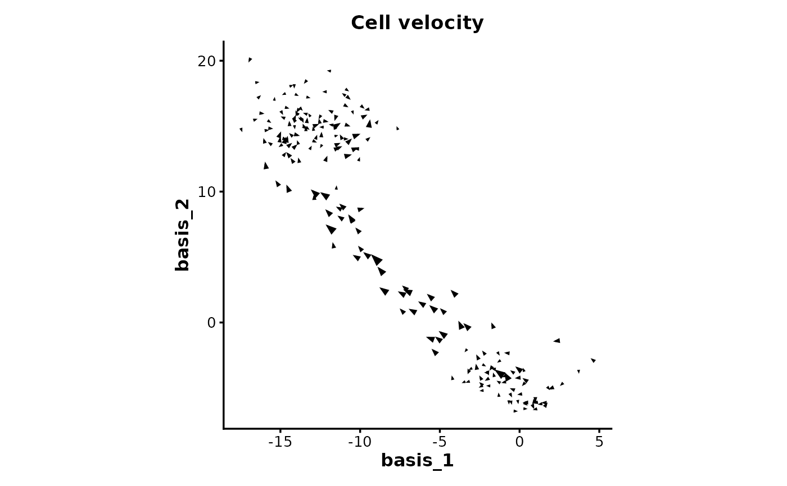
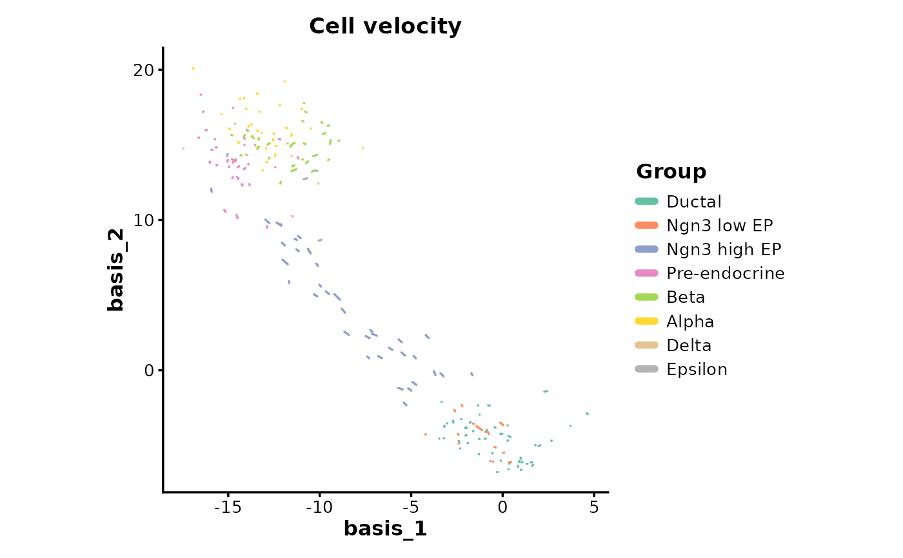
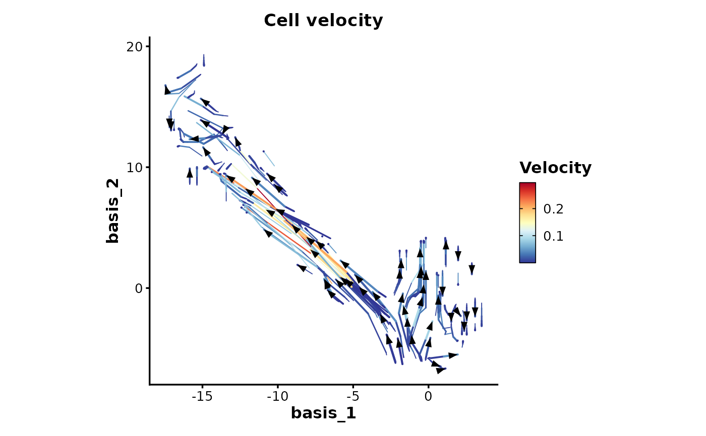
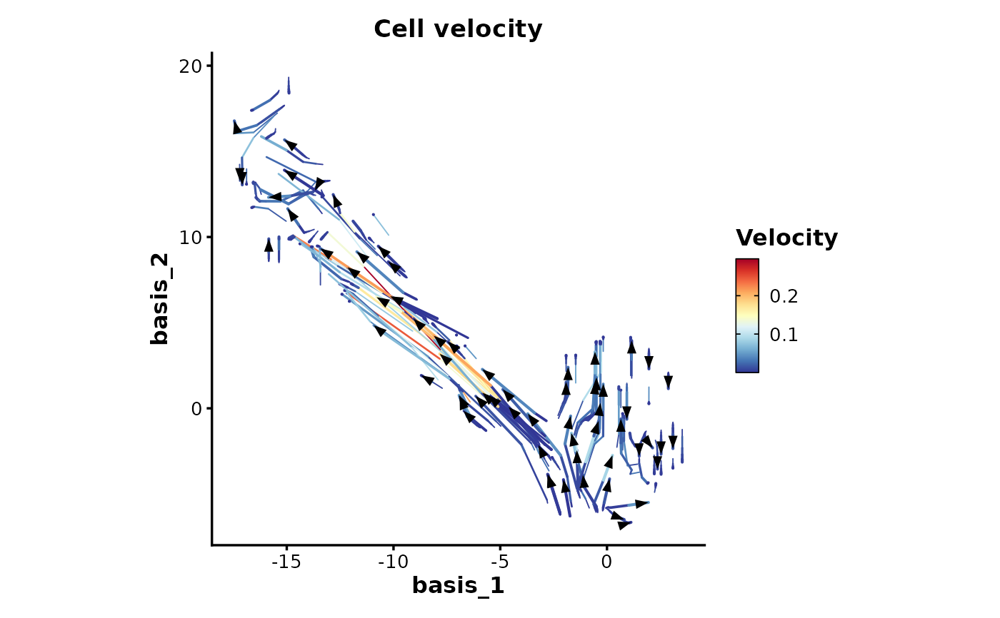

Visualize RNA velocity vectors on cell embeddings using arrows or streamlines. Supports three visualization modes: raw (cell-level arrows), grid (smoothed arrows), and stream (continuous streamlines).
Usage
VelocityPlot(
embedding,
v_embedding,
plot_type = c("raw", "grid", "stream"),
group_by = NULL,
group_name = "Group",
group_palette = "Paired",
group_palcolor = NULL,
n_neighbors = NULL,
density = 1,
smooth = 0.5,
scale = 1,
min_mass = 1,
cutoff_perc = 5,
arrow_angle = 20,
arrow_color = "black",
arrow_alpha = 1,
streamline_l = 5,
streamline_minl = 1,
streamline_res = 1,
streamline_n = 15,
streamline_width = c(0, 0.8),
streamline_alpha = 1,
streamline_color = NULL,
streamline_palette = "RdYlBu",
streamline_palcolor = NULL,
streamline_bg_color = "white",
streamline_bg_stroke = 0.5,
aspect.ratio = 1,
title = "Cell velocity",
subtitle = NULL,
xlab = NULL,
ylab = NULL,
legend.position = "right",
legend.direction = "vertical",
theme = "theme_ggforge",
theme_args = list(),
return_layer = FALSE,
seed = 8525
)Arguments
- embedding
Matrix or data.frame of dimension n_obs x n_dim with cell embedding coordinates
- v_embedding
Matrix or data.frame of dimension n_obs x n_dim with velocity vectors
- plot_type
Type of plot: "raw" (cell-level arrows), "grid" (smoothed grid arrows), or "stream" (streamlines)
- group_by
Optional grouping variable for coloring arrows (only for plot_type = "raw")
- group_name
Name for the grouping legend
- group_palette
Palette for group colors
- group_palcolor
Custom colors for groups (overrides group_palette)
- n_neighbors
Number of nearest neighbors for grid computation
- density
Density of grid points (or sampling density for raw mode between 0-1)
- smooth
Smoothing factor for velocity vectors
- scale
Scaling factor for velocity vectors
- min_mass
Minimum mass for grid points
- cutoff_perc
Percentile cutoff for low-density grid points
- arrow_angle
Angle of arrowheads in degrees
- arrow_color
Color of arrow heads
- arrow_alpha
Transparency of arrows (raw and grid modes)
- streamline_l
Length of streamlines
- streamline_minl
Minimum length of streamlines
- streamline_res
Resolution of streamlines
- streamline_n
Number of streamlines
- streamline_width
Width range for streamlines
- streamline_alpha
Transparency of streamlines
- streamline_color
Fixed color for streamlines (NULL for gradient)
- streamline_palette
Palette for streamline gradient
- streamline_palcolor
Custom colors for streamline gradient
- streamline_bg_color
Background color for streamlines
- streamline_bg_stroke
Background stroke width
- aspect.ratio
Aspect ratio of plot
- title
Plot title
- subtitle
Plot subtitle
- xlab
X-axis label
- ylab
Y-axis label
- legend.position
Legend position
- legend.direction
Legend direction
- theme
Theme name or function
- theme_args
List of arguments passed to theme function
- return_layer
Return ggplot layer instead of complete plot
- seed
Random seed
Examples
# \donttest{
# Load example data
data(dim_example)
# Basic raw velocity plot
VelocityPlot(
embedding = dim_example[, 1:2],
v_embedding = dim_example[, 3:4]
)

# Velocity plot with grouping
VelocityPlot(
embedding = dim_example[, 1:2],
v_embedding = dim_example[, 3:4],
group_by = dim_example$clusters,
group_palette = "Set2"
)
#> Warning: [VelocityPlot] 'arrow()' in ggplot2 >= 4.0.0 does not support varying lengths. Using fixed length instead.

# Grid-based velocity plot (smoothed arrows)
VelocityPlot(
embedding = dim_example[, 1:2],
v_embedding = dim_example[, 3:4],
plot_type = "grid",
density = 2
)
 # Streamline velocity plot
VelocityPlot(
embedding = dim_example[, 1:2],
v_embedding = dim_example[, 3:4],
plot_type = "stream",
streamline_n = 20
)

# }
# Streamline velocity plot
VelocityPlot(
embedding = dim_example[, 1:2],
v_embedding = dim_example[, 3:4],
plot_type = "stream",
streamline_n = 20
)

# }